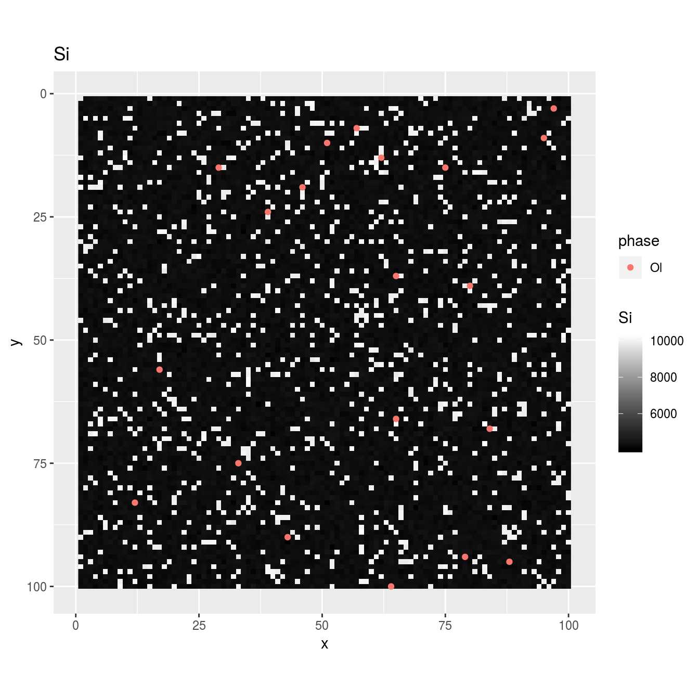
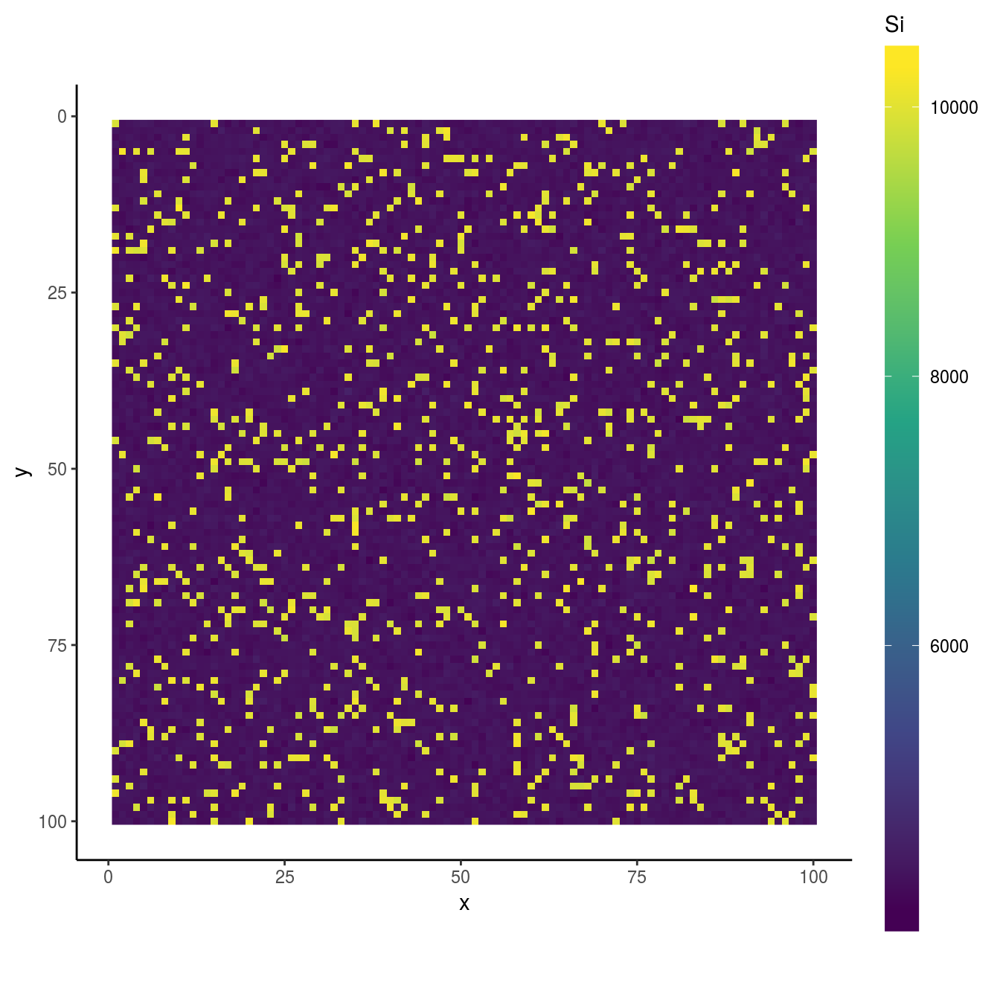

vignettes/add_phase.Rmd
add_phase.RmdThis vignette introduce a way to quantify X-ray map even if, in accident, there are some phases without spot analysis. For accurate analysis, I highly recommend careful observation prior to EPMA analysis, so that as less phases as possible being missed.
Please read basic.html before hand.
This section prepares package, files, and modify sample data. An original sample dataset is same as that used in “Basic usage”. However, the dataset will be modified to let a phase be not analyzed by EPMA spot analysis. This is why “Specify directories containing data” and “Load Data” belongs to “Preparation” despite they belongs to Analysis section of “Basic usage”.
or any original data.
file.copy(
from = system.file('extdata', 'minimal', package = 'qntmap'),
to = wd,
recursive = TRUE
)
#> [1] TRUETRUE indicates files are successfully copied. Check if really files are copied by dir().
dir(file.path(wd, 'minimal'), recursive = TRUE, all.files = TRUE)
#> [1] ".map/1/0.cnd" ".map/1/1_map.txt" ".map/1/1.cnd"
#> [4] ".map/1/2_map.txt" ".map/1/2.cnd" ".qnt/.cnd/elemw.cnd"
#> [7] ".qnt/bgm.qnt" ".qnt/bgp.qnt" ".qnt/elem.qnt"
#> [10] ".qnt/elint.qnt" ".qnt/mes.qnt" ".qnt/net.qnt"
#> [13] ".qnt/pkint.qnt" ".qnt/stg.qnt" ".qnt/wt.qnt"
#> [16] "README.md"In the original dataet, 20 spots are analyzed by EPMA on both olivine and quartz.
Let’s delete quartz from dataset and reload.
After read_qnt() is performed, a file phase_list0.csv is created under dir_qnt. This file consists of 3 columns id, phase, and use.
Do not edit id.
Correct phase in the analyzed phases are not expected ones, or in case some phase needs be sub-grouped due to large compositional variation. For example, substitute Ol by Ol_Fe and Ol_Mg based on Fe/Mg ratio.
Correct use in case there are bad results.
This time, let use be FALSE if phase is Qtz, and retry read_qnt
To do it on R, execute codes below. Be sure to specify a path to modified csv file to phase_list parameter of read_qnt. Also, renew parameter of read_qnt must be TRUE.
phase_list <- read.csv('phase_list0.csv')
phase_list$use[phase_list$phase == 'Qtz'] <- FALSE
write.csv(phase_list, file.path(dir_qnt, 'phase_list_no_qtz.csv'))
qnt <- read_qnt(dir_qnt, phase_list = file.path(dir_qnt, 'phase_list_no_qtz.csv'), renew = TRUE)After editing, only olivine is said to be quantified.


In this case, an analysist will notice there is something other than olivine. Let’s mouse over the interactive map and one will see one of the coordinates of quartz (e.g., x = 18, y = 28). Keep it in your note.
centers_initial0.csv in the current directory (try getwd() on R if unknown).centers <- read.csv('path to an updated csv file')